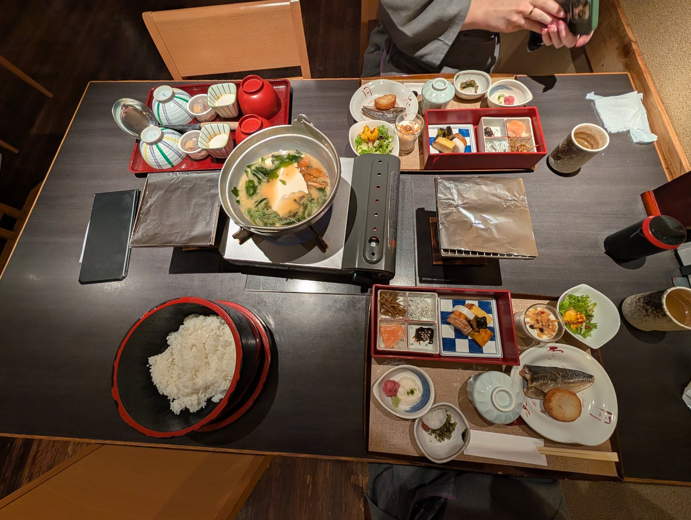
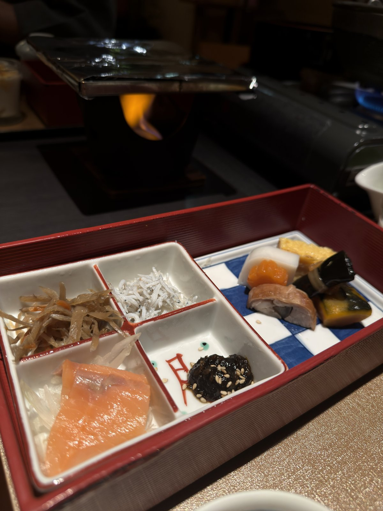

The boring stuff, sorted
Logistics
Everything we figured out so you don't have to — flights, hotels, phones, trains, luggage, and the small etiquette things that make you feel less like a tourist.
Flights
Haneda is big and a little disorienting on arrival. The single most useful thing we did was watch a short walkthrough of how to reach the monorail before we landed — knowing what signs to look for turned a stressful first hour into a non-event. Watch it here.
Hotels
Shibuya Excel Hotel Tokyu
Mar 31 – Apr 9 · Shibuya
Our home base, and the recommendation we'd make most loudly. It sits directly on top of the train station — being able to drop into the Yamanote Line without stepping outside changed how much we could pack into each day. A little pricier than the budget options; worth every yen.
The service made it. Klook botched our original booking (ten separate one-night stays instead of one ten-night stay), and the front desk sorted the whole mess out with total grace. That's the kind of thing you only find out about a hotel when something goes wrong.
Tonoyu Setsugekka
Apr 5 – Apr 6 · Hakone Gora
A lovely onsen ryokan a short walk from Gora Station. Our room had a private hot tub on its own balcony, and breakfast was included. If you do one overnight onsen on your trip, this is a wonderful one to pick.


The onsen overnight and the Hakone day trip do different jobs. Do both if you can — see the Hakone comparison.
Phone service
Softbank 5G eSIM
~$20 each · $40 total
Our main connection, bought as an eSIM before we left. We each got 20 GB and used nowhere near it — 10 GB would be plenty for two people navigating and posting. Setup on arrival was fiddlier than expected: adding the eSIM and power-cycling our phones a few times before it finally caught. Budget a little patience for that first hour.
Mint Mobile travel add-on
~$5 · 100 SMS
Pure backup. We bought 100 texts as insurance in case we ever lost both Wi-Fi and the Japanese eSIM at the same time. We barely touched it — but for five dollars, the peace of mind was easy to justify.
Trains & getting around
Suica IC card
We booked our Suica cards through Klook, paid in advance, and picked them up at the airport — a smooth start. Sarah loaded hers straight into her iPhone Wallet and just tapped through every gate, which is the dream. It would not load onto Zach's Android, so he used the physical card the whole trip — also completely fine.
Romancecar to Hakone
For the longer run out to Hakone, we'd recommend the reserved-seat Romancecar. You get a guaranteed comfortable seat and don't have to think about mid-route transfers with your luggage.
Google Maps was our co-pilot
For the metro, Google Maps did everything: multiple route options by line, fares included, color-coding that matched the actual line colors, and live schedules. The one catch is transfer timing — it assumes you already know exactly where to walk between platforms and only allots that much time.
At busy stations you'll sometimes get a 2–3 minute transfer window that assumes zero hesitation. If you miss it while reading signage, don't stress — the next train is usually about ten minutes out.
Airport limousine bus (going home)
For the trip back, loaded down with a new checked suitcase plus carry-ons, we skipped the train and took the airport limousine bus. It collected us at the hotel door and dropped us right at the terminal — the calmest possible way to end the trip.
Luggage strategy
This is our flagship tip. We flew to Tokyo with carry-on only — just clothes — and planned from the start to buy a checked suitcase partway through to fill with gifts and souvenirs for the trip home. We picked ours up in Ginza on Day 8.
The upside is huge: you travel light for most of the trip, you're not dragging a half-empty bag around Tokyo, and you only pay for checked baggage on the leg where you actually need it. We'd do it exactly this way again.
Money & etiquette
- Your IC card (Suica) covers nearly everything — trains, convenience stores, vending machines. Keep it topped up and you'll rarely dig for coins.
- At registers, cash goes on the little tray rather than into the cashier's hand.
- Stand on one side of the escalator and leave the other clear for walkers (it varies by region — follow the locals).
- Trains are quiet spaces. Keep calls off and voices low, especially in marked quiet cars.
- No tipping. It's genuinely not expected, and trying can cause confusion.
Last updated · April 2026